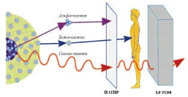
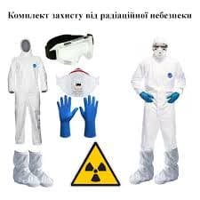
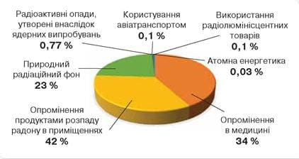

Радіація в житті людини
-
Радіація, або іонізуюче випромінювання, — це енергія, що поширюється у вигляді хвиль або частинок. Вона присутня у житті людини щодня, від природних джерел, таких як сонце, до штучно створених, як медичне обладнання. У маленьких дозах радіація використовується для діагностики та лікування захворювань, зокрема, рентгенівські знімки та радіотерапія. Однак, надлишкове або неконтрольоване випромінювання може бути шкідливим для здоров'я, пошкоджуючи клітини та ДНК, що потенційно може призвести до раку.
-
Освітлення питання взаємодії людини з радіацією вимагає знання про різні її типи (альфа-, бета-, гамма-випромінювання, нейтрони) та заходи безпеки, необхідні для захисту від її негативного впливу. Зокрема, важливо обмежувати час перебування біля джерел радіації, збільшувати відстань від цих джерел та використовувати захисні бар'єри та одяг.
-  
-
У повсякденному житті ми стикаємося з природним фоновим випромінюванням, що походить від космічних променів, радону в повітрі, а також з їжею та питною водою. Незважаючи на це, сучасні наукові дослідження та технології дозволяють мінімізувати ризики та забезпечити захист від небажаного впливу радіації.
- 
Знання про радіацію та її вплив на життя людини допомагає нам краще розуміти навколишнє середовище і заходи безпеки, необхідні для збереження здоров'я та благополуччя в умовах сучасного світу.